The problem is not cooking. It is the friction around cooking.
A kitchen can feel frustrating even when you know what you want to make.
The slow parts are usually smaller than people think: guessing temperature, digging for spices, wet greens, garlic prep, sink clutter, pantry mess, and awkward small-space cooking.
Smart kitchen products should not be random. Each one should remove one repeated problem so the kitchen feels easier to use every day.
“A useful kitchen tool earns its space by removing a problem you keep repeating.”
Signs your kitchen needs smarter friction fixes
- You avoid cooking because prep feels longer than the meal.
- You guess food temperature instead of checking it.
- Spices, rice, produce, or sink tools keep turning into clutter.
- The sink or stovetop looks messy even after basic cleaning.
- You want quick meals without pulling out large appliances.
The simple system that makes sense
Start with the task that makes you avoid cooking.
Give food, spices, and sink tools a cleaner place to go.
Choose products you can use every week, not once.
Products that fit the solution
Each product below has a specific job. The goal is not to buy random tools. The goal is to remove the repeated friction that makes the space harder to use.
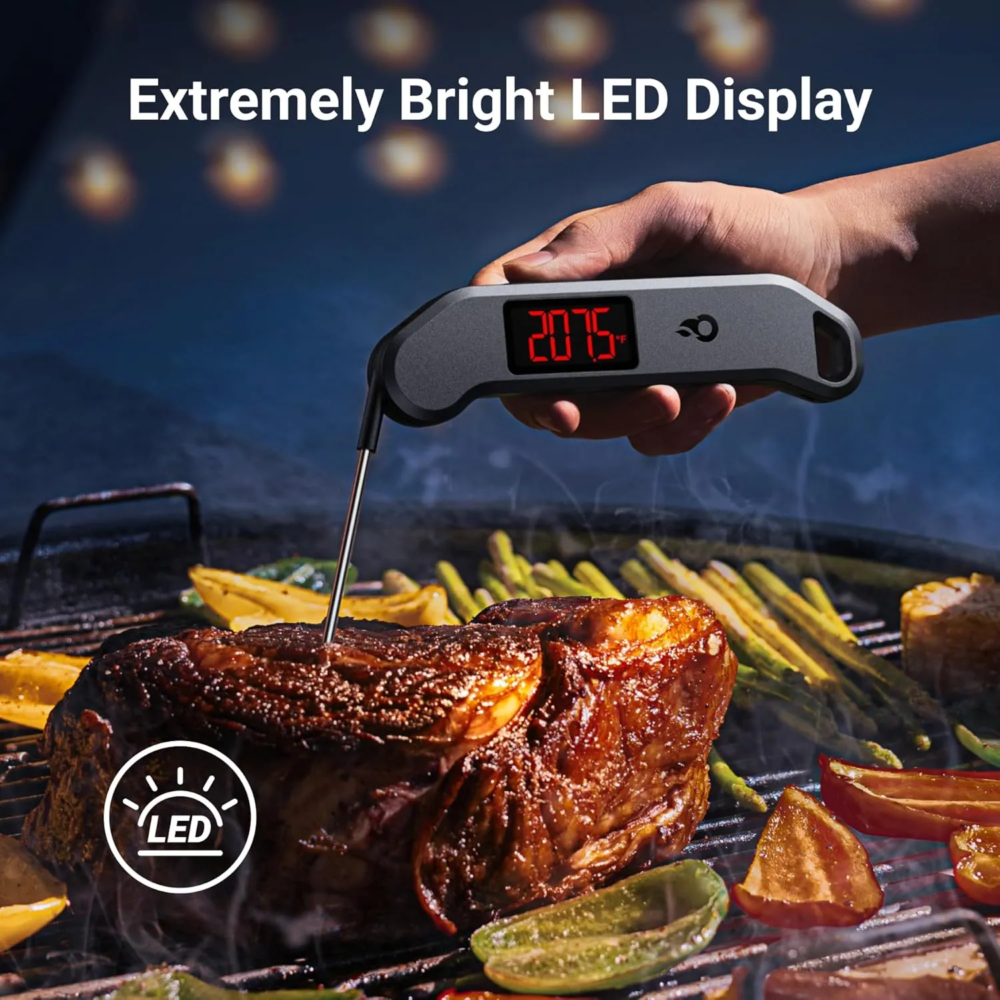
Stop guessing when food is actually done.

Fast protein without babysitting the stove.

A small cooker for quick meals when the kitchen setup is limited.
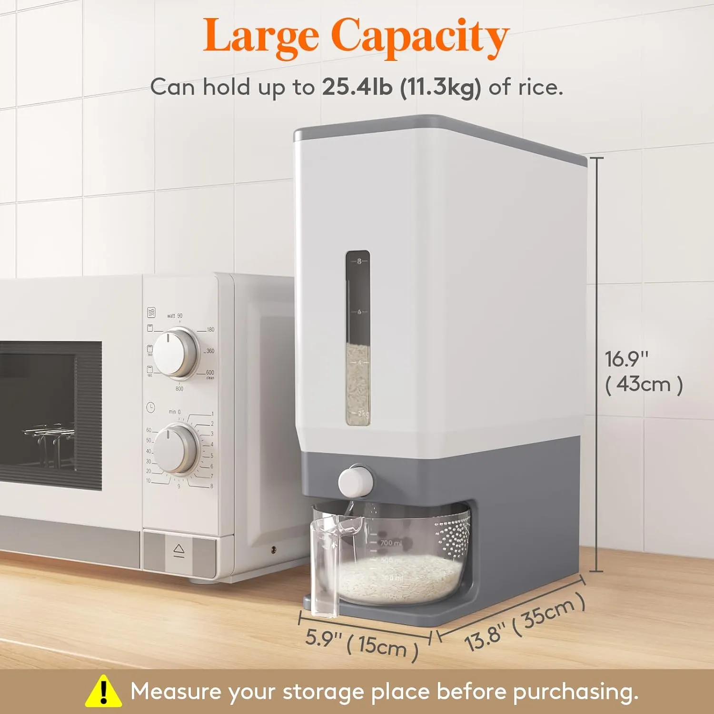
Turn messy bags into clean pantry flow.
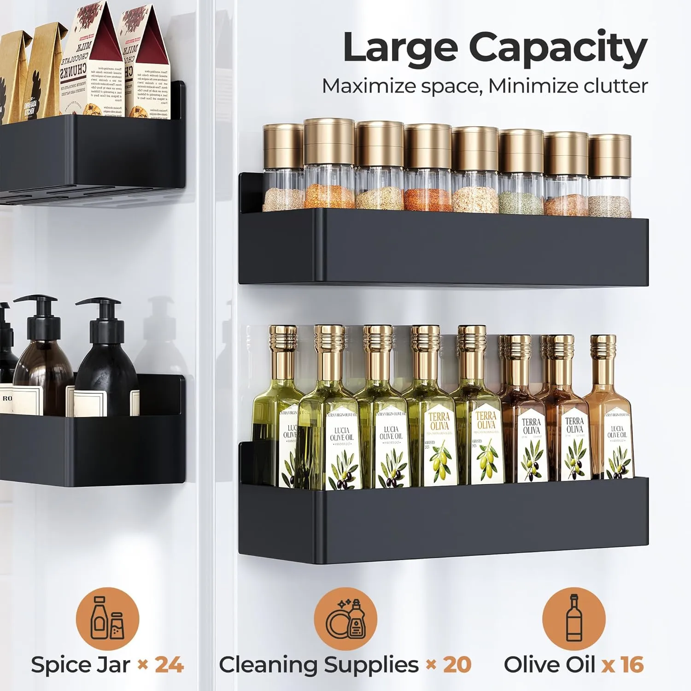
Use the side of the fridge like storage.
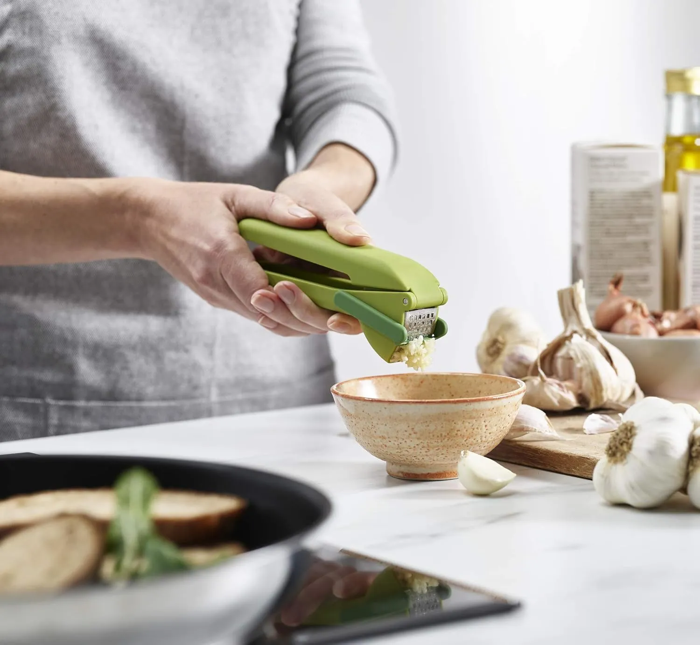
Make the flavor step less annoying.
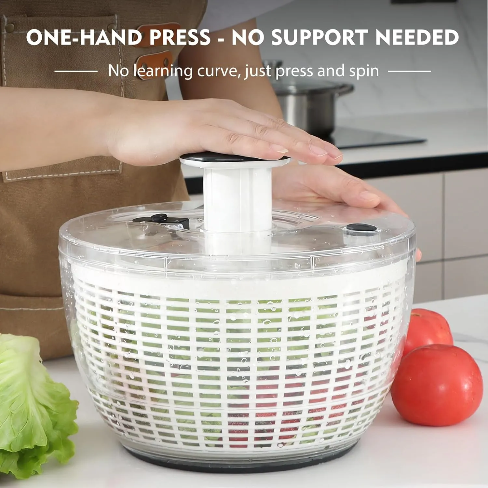
Dry greens make better salads and faster prep.
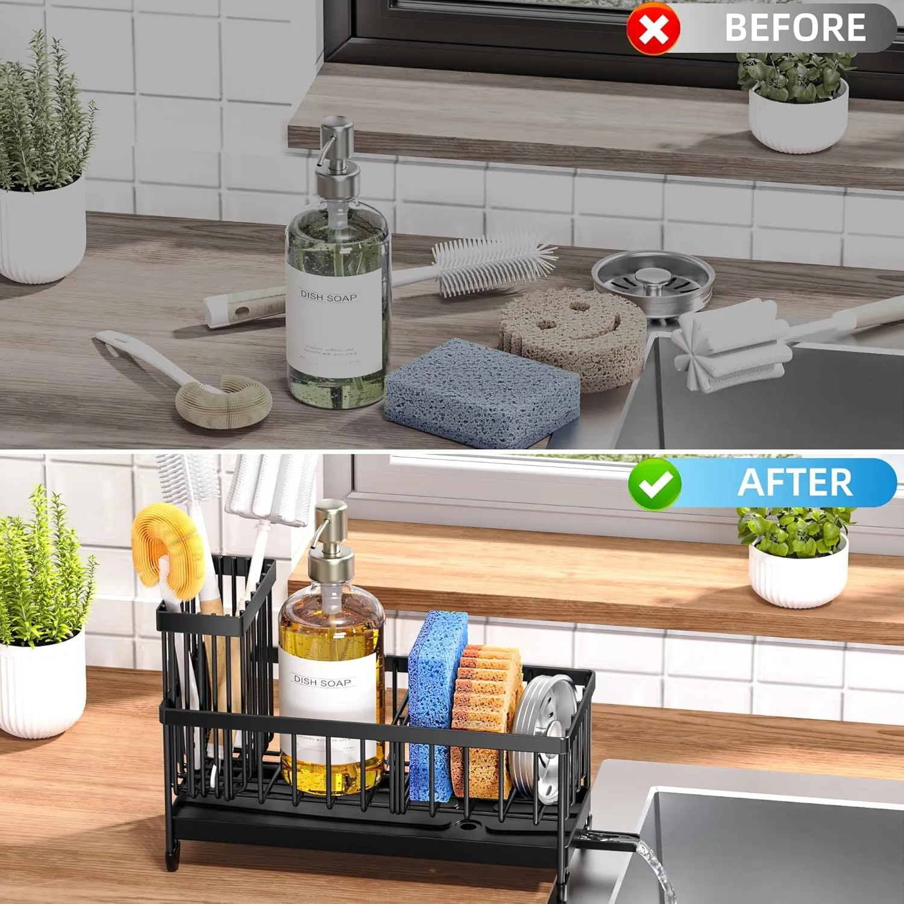
When the sink area looks cleaner, the whole kitchen feels cleaner.
ThermoMaven Digital Meat Thermometer
Stop guessing when food is actually done.
Cooking becomes stressful when doneness is a guess. Chicken gets dry, steak gets overcooked, or you cut food open too early and lose the texture you wanted.
A digital thermometer gives you a clear answer. That removes one of the most annoying parts of cooking: uncertainty.
Why it fits this guide
This product fits because it solves a repeated mistake, not a one-time novelty. It helps with grilling, roasting, meal prep, and weeknight dinners.
When you know the temperature, cooking feels calmer and more controlled.

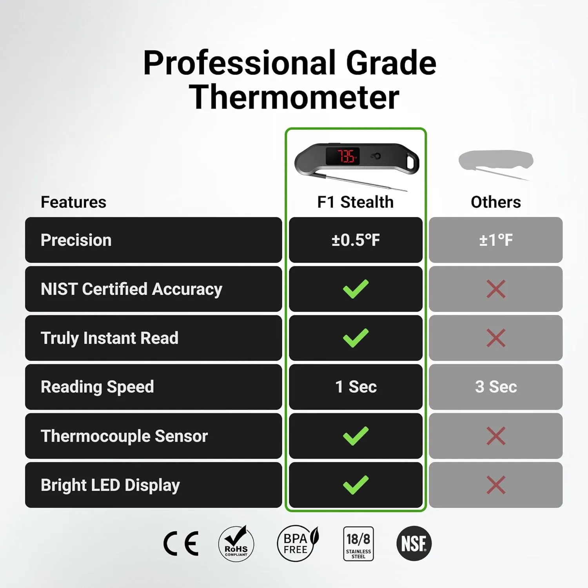
Customer proof
“Instant reading for oven and air fry items. Good for hot beverages for little ones too.”Johnny G. — Amazon customer
“Super simple, no-nonsense and fast digital thermometer. Bright display with auto-off.”Deege — Amazon customer
“Very easy to read and seems accurate. Easy to clean and store.”Meredith L. Emmons — Amazon customer
Merchant take: This is the confidence tool. It does not make cooking fancy; it makes cooking less random.
Browse Kitchen FindsElite Gourmet Electric Egg Cooker
Fast protein without babysitting the stove.
Eggs are simple, but they still need attention. In a busy morning, even small timing steps can feel annoying.
An electric egg cooker makes breakfast or meal prep easier to repeat because it removes the timing stress.
Why it fits this guide
This fits the kitchen-routine angle because it supports a repeated habit. Boiled eggs, snacks, breakfast prep, and quick protein become easier.
It is especially useful for small kitchens because it gives you a dedicated task without taking over the whole stove.

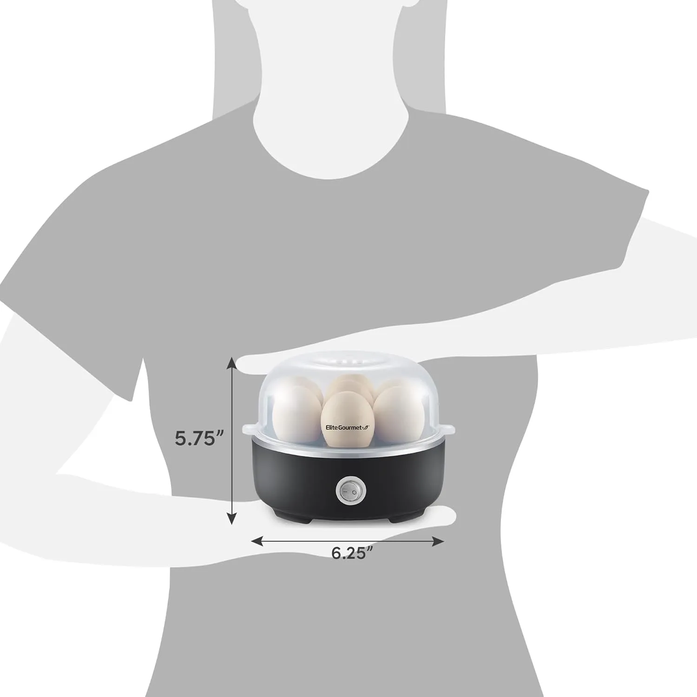
Customer proof
“So easy to use, the eggs are done perfectly and SO EASY TO PEEL!”C L — Amazon customer
“Compact and cooks perfectly every single time.”Darren — Amazon customer
“It made hard-boiled eggs perfectly. I totally recommend this product for anyone who eats eggs.”Vincent C. Romito — Amazon customer
Merchant take: This is a routine product, not a showpiece. Its value is how often it can quietly save time.
Browse Kitchen FindsDEZIN 2L Electric Hot Pot / Mini Cooker
A small cooker for quick meals when the kitchen setup is limited.
Not every kitchen has a full setup. Dorm rooms, offices, small apartments, and temporary spaces often need something more flexible than a full stove routine.
A compact electric hot pot helps with noodles, soups, simple meals, and quick cooking when you want less setup.
Why it fits this guide
It fits because it solves the access problem. Sometimes the issue is not that cooking is hard; it is that the space makes cooking feel inconvenient.
Small appliances only make sense when they earn their space. This one earns it by covering quick meals in compact places.
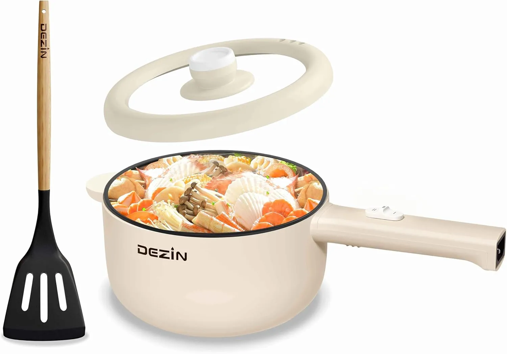

Customer proof
“Perfect for dorm use. The size is just right for one person, whether I’m making ramen, soup, or small hot pot meals.”jiaying du — Amazon customer
“It heats up really quickly, and I had no idea it would be this useful.”William Farris — Amazon customer
“Works well, perfect for making soups and rice.”ellie s — Amazon customer
Merchant take: This is the compact-meal fix. It works best when the kitchen itself is the obstacle.
Browse Kitchen FindsLifewit Rice Dispenser
Turn messy bags into clean pantry flow.
Rice bags and grain bags look harmless until they start spilling, folding, leaning, and taking over pantry space.
A rice dispenser makes dry staples cleaner to store and easier to portion. That matters if rice, grains, or dry food are part of the weekly routine.
Why it fits this guide
This fits the article because pantry mess is not just visual. It slows down cooking before you even start.
Good storage should make the ingredient easier to use, not just prettier to look at.

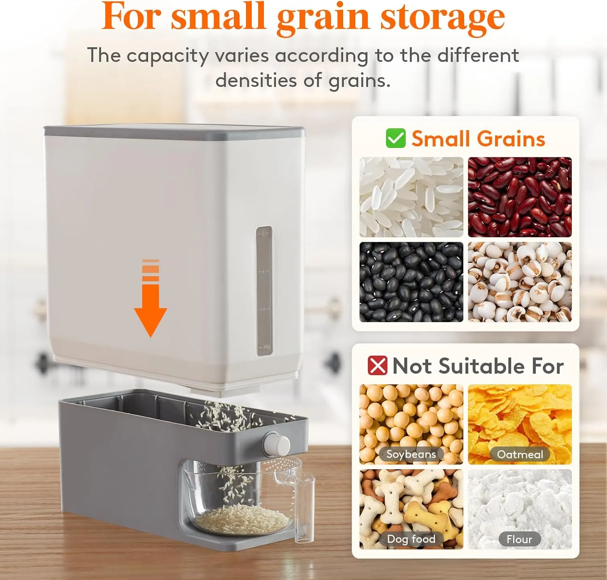
Customer proof
“Best rice dispenser I’ve ever had. It does hold 25 lbs of rice.”Amazon Customer — Amazon customer
“The airtight seal really helps keep the rice fresh, and I love that it protects it from moisture and bugs.”Franchesca Landestoy — Amazon customer
“Not too big and bulky for the kitchen and I love the bowl that it comes with to wash the rice.”Keith Dixon — Amazon customer
Merchant take: This is the pantry-control fix. It is useful because it makes a repeated ingredient easier to reach and measure.
Browse Kitchen FindsMystozer Magnetic Spice Rack
Use the side of the fridge like storage.
Spices slow cooking down when they are buried in a cabinet. You start with good intentions, then waste time searching for the seasoning you need.
A magnetic spice rack makes spices visible and reachable without drilling or adding another shelf.
Why it fits this guide
It fits the kitchen friction problem because it turns dead space into active storage. The side of a fridge can do more than hold magnets.
Good spice storage should help you cook faster, not just look organized when the jars are new.

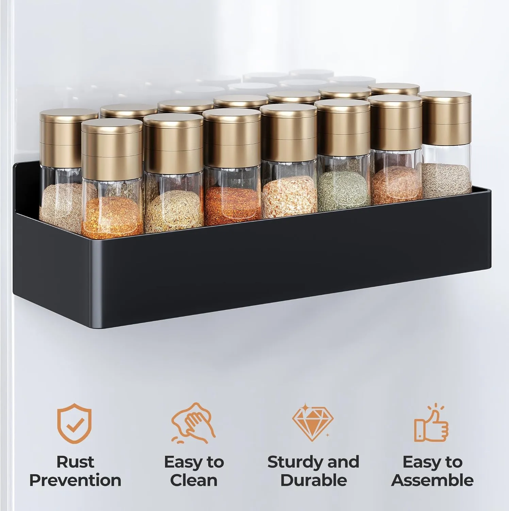
Customer proof
“Rigid, durable, and sticks where you put it. These shelves keep all my spices handy.”Lillian B. — Amazon customer
“Super happy with how they have freed up my limited cabinet space.”Buldg7 — Amazon customer
“Well made. Holds a lot and the magnets are strong enough for my full complement of spices and extracts.”Rebekah — Amazon customer
Merchant take: This is the access fix. It helps when the problem is not owning too many spices, but not being able to reach them easily.
Browse Kitchen FindsJoseph Joseph CleanForce Garlic Press
Make the flavor step less annoying.
Garlic makes food better, but mincing it can feel like one more messy step when you are trying to cook quickly.
A better garlic press helps because it shortens a small task that repeats often.
Why it fits this guide
This product fits because it removes prep resistance. If the annoying step gets easier, you are more likely to cook the meal you planned.
The goal is not gadget clutter. The goal is a tool that earns its drawer space because you actually use it.
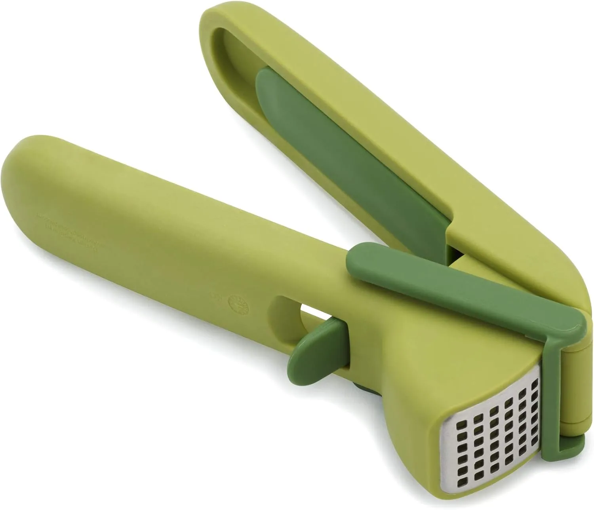
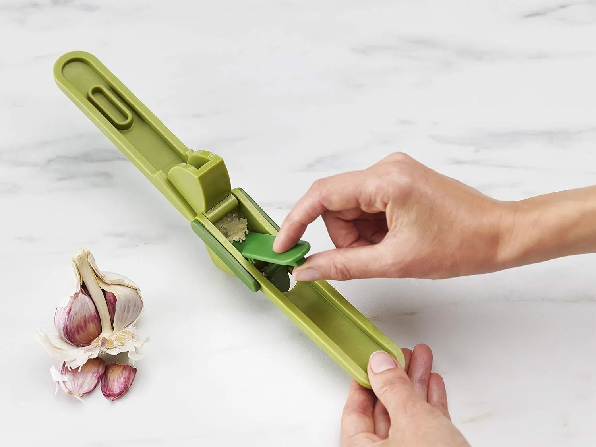
Customer proof
“It’s big enough to fit large cloves of garlic.”Matthew — Amazon customer
“This press is great and works very well. The cleaning tool is good too and easy to use.”chris hastings — Amazon customer
“The best part is the trigger pull wiper blade, that easily cleans the minced garlic off of the press.”PJ — Amazon customer
Merchant take: This is the small-prep fix. It is not dramatic, but it can remove one repeated annoyance from cooking.
Browse Kitchen FindsOurokhome One-Hand Salad Spinner
Dry greens make better salads and faster prep.
Fresh food gets less appealing when prep feels wet, slow, and messy. Greens that stay wet can make salads soggy and less enjoyable.
A salad spinner helps rinse and dry greens, herbs, and produce more efficiently.
Why it fits this guide
It fits because it supports the healthy routine people actually want to repeat. Fresh food needs to feel easy enough to make on a normal day.
Better prep tools do not force you to eat better; they make the better choice less annoying.
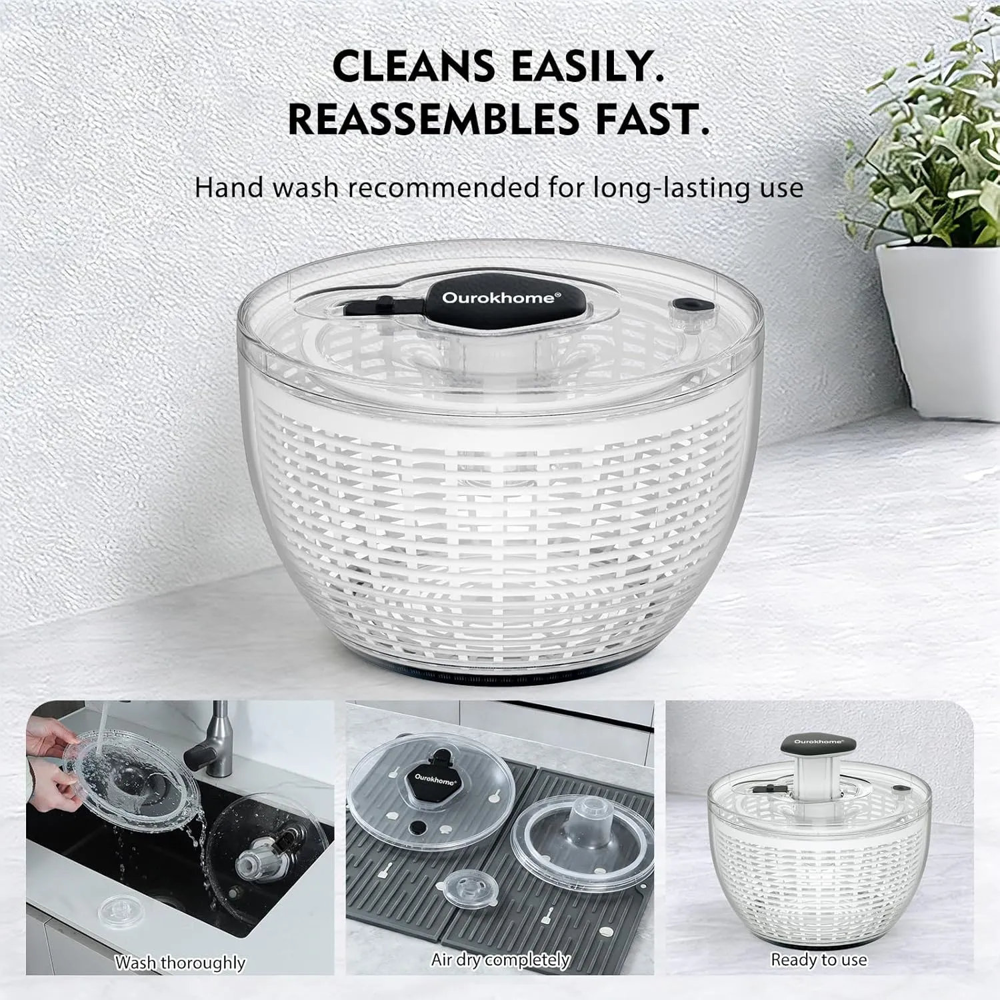
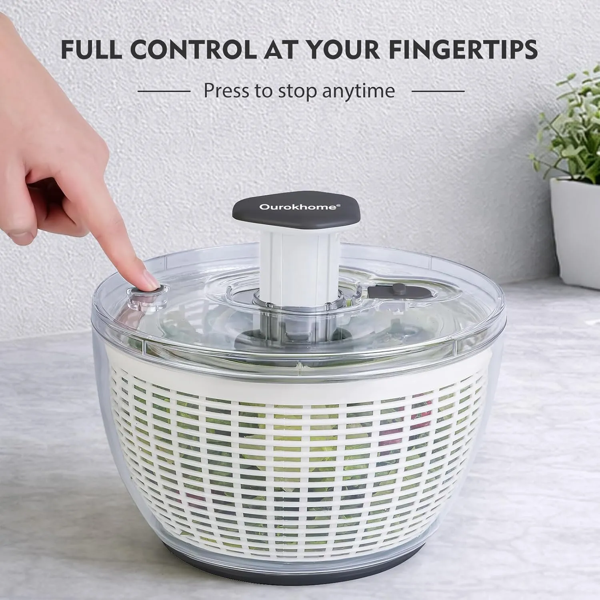
Customer proof
“Solid crafted. Works excellent.”Amazon customer — Amazon customer
“Easy to clean and reassembles fast.”Amazon customer — Amazon customer
“One-hand press makes it simple to spin without fighting the lid.”Amazon customer — Amazon customer
Merchant take: This is the fresh-prep fix. It makes a healthy routine easier to repeat.
Browse Kitchen FindsCisily Kitchen Sink Organizer
When the sink area looks cleaner, the whole kitchen feels cleaner.
The sink is one of the first places that makes a kitchen feel messy. Sponges, brushes, soap, and small tools spread out fast.
A sink organizer gives those items a home so the counter looks calmer even between cleanups.
Why it fits this guide
It fits because sink clutter is a daily visual problem. You see it every time you walk into the kitchen.
Good organization here is not about perfection. It is about stopping small wet tools from taking over the counter.
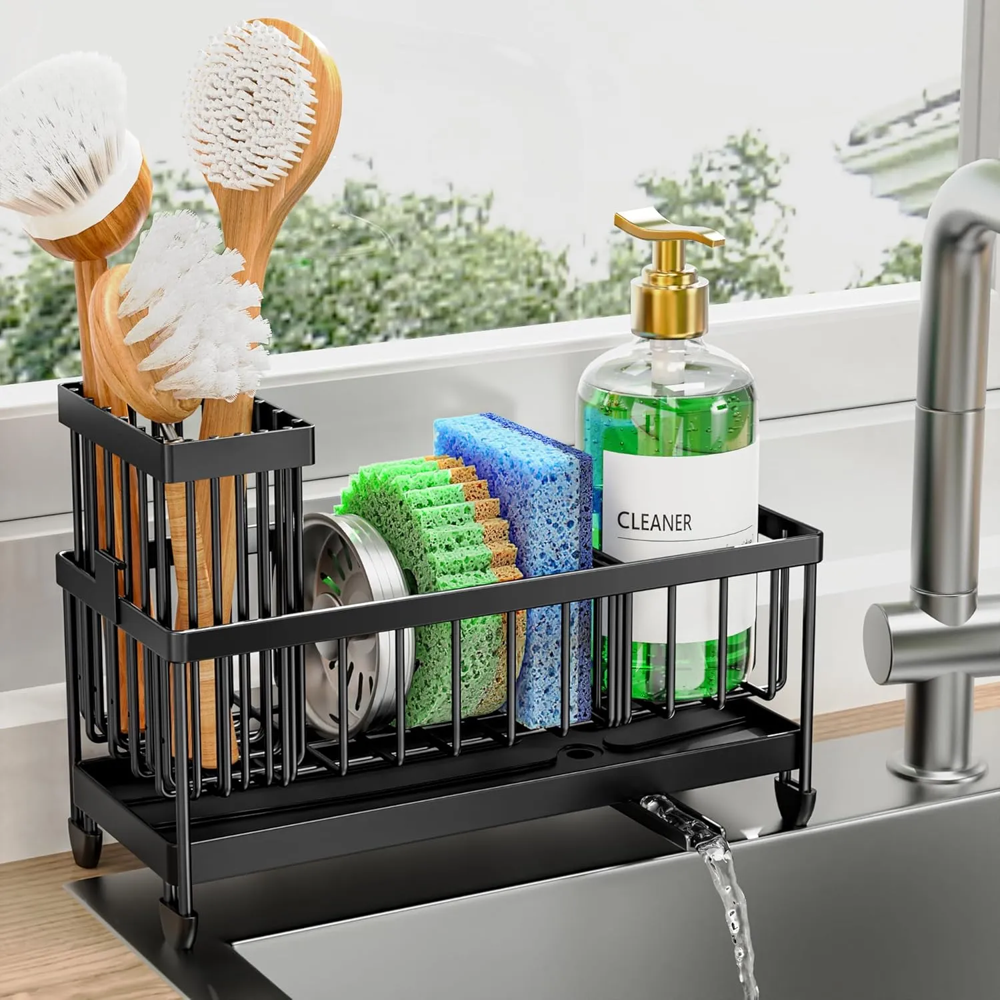
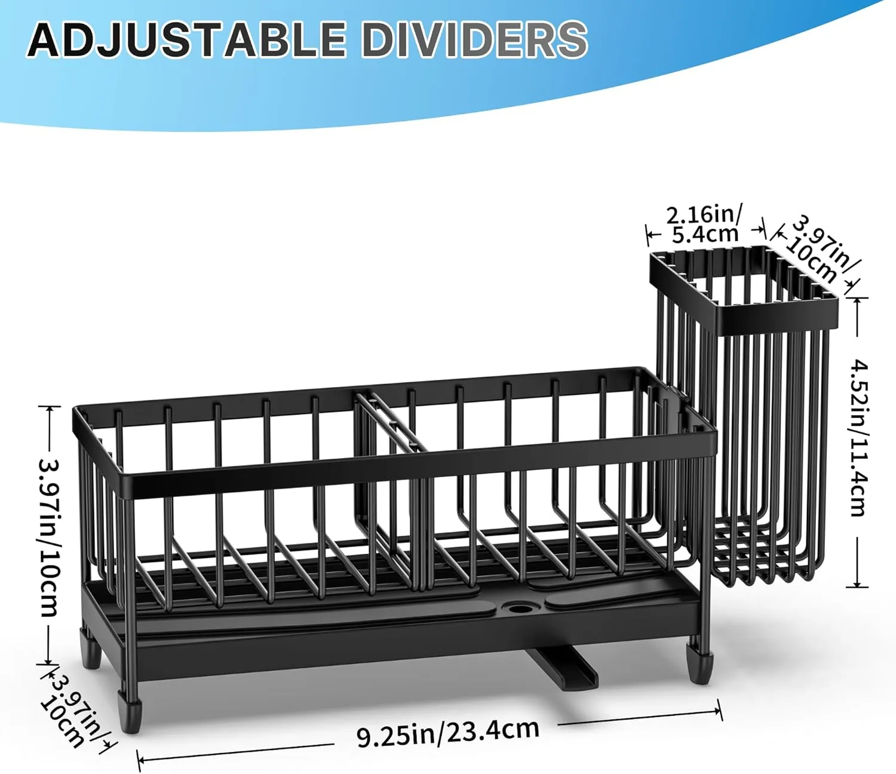
Customer proof
“I got all of my sponge and soaps in the same spot which is wonderful cleaned off my counter beautifully.”Cgreen — Amazon customer
“It is very simple to put together and it feels sturdy and I like how it looks.”Sabina Boo-Rivera — Amazon customer
“It holds all the dish brushes and sponge neatly along with the soap dispenser.”Alex — Amazon customer
Merchant take: This is the visual-cleanup fix. It gives the messiest daily tools a place to live.
Browse Kitchen FindsFAQ
Should I buy everything at once?
No. Start with the one pressure point you deal with every day. One useful fix is better than five random products.
What makes a product worth adding?
It should solve a repeated problem, be easy to use, and make the routine smoother after the first week.
What is the biggest mistake?
Buying products because they look organized instead of because they fit the exact problem.
Make the kitchen easier to use, not just fuller.
The best kitchen finds remove friction from cooking, prep, storage, cleaning, and serving so the kitchen feels easier to use every day.